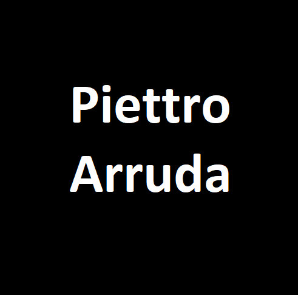

Piettro Arruda
Sobre mim
Olá! Sou uma pessoa apaixonada por música e acredito que ela teve e tem uma grande influência na minha vida. A música me salvou em momentos difíceis, sendo uma fonte constante de inspiração através dela é onde encontro força, fazendo com que cada dia seja mais significativo.
Recentemente, em 2022, descobri uma nova paixão: a área de tecnologia em si. A lógica, a criatividade e a constante evolução dessa área me faz entrar em uma realidade alternativa de pensamentos. Encontrar soluções inovadoras e criar algo do zero são desafios que me motivam a aprender e crescer continuamente. Mergulhar no mundo da programação tem sido uma jornada emocionante!
Ah, e entre um código e outro, sempre tento encontrar um tempinho para ouvir uma boa música, que é um grande combustível que impulsiona minhas novas descobertas.